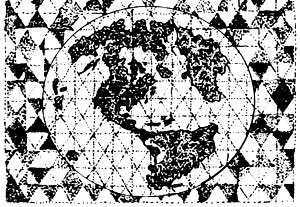

Believe it or not, the following article by Peter van Dresser was originally published-exactly as you see it here-in the June 1938 issue of Free America. Not a word has been changed. The piece stands as dramatic proof that-37 years ago-Mr. van Dresser was accurately predicting today's energy crunch, and outlining possible solutions that most people still haven't considered.
As Mr. Stuart Chase has pointed out, the most telling label for the period since the Industrial Revolution is, not the Machine Age or the Iron Age, but the Power Age. Machinery, metallurgy and mass production were known before Watt, but since the invention of the steam engine the amount of mechanical power available to man has increased at an unprecedented rate, until the present estimated horsepower of civilization is at least a billion and a half. The United States has such a liberal share of this flow of engine-generated horsepower that for each man, woman or child in the country there is available energy equivalent to the combined strength of fifty slaves or more.
It is this enormous increase in power which is held, more than any other single factor, to have made possible modern civilization with its equally enormous increase in productivity.
To a considerable extent this is true.
Any economic program-such as that of the distributist-decentralist-which calls for an adaptation of the methods of modem technology must take into account the problem of the source, generation, distribution and use of the inanimate power which makes possible this technology.
The broadest fact concerning power which observers of technological and economic trends have to point out is that as the twentieth century matures there has begun and must continue a modification of our technics to suit shifting energy sources. The most drastic of these shifts in point of nearness in time as well as magnitude of factors involved is due to the approaching exhaustion of our petroleum reserves. Geologists are fairly well agreed that within a few more decades America will experience a sharp diminution in the supply of available petroleum. Since the manufacture of automobiles-our greatest Power Age industry and keystone of our economic structure-is dependent on this supply, drastic reorganization in our technology or economy or both is to be expected.
A similar, although not so severe diminution in our other basic energy source, coal, is also to be expected, as workings grow deeper and the difficulties of extraction mount (as they have long ago mounted in England).
By far the greater portion-possibly as much as ninety per cent-of the mechanical power developed in this country is employed in transportation of all types, and of this portion in turn an almost equally high percentage is developed by the engines of automobiles and trucks.
The Power Age would appear to be likewise a Transportation Age.
What sort of changes can we anticipate in our economic machinery as the flow of the plutonic fuels-coal and oil-into the fireboxes and cylinders of its prime movers inevitably shrinks?
There are various standard engineering answers to this question. Oil will be extracted from shale and produced by hydrogenation of low-quality coals. An increasing proportion of coal will be used in central power plants adapted to burning such coals efficiently. All available hydroelectric power will be harnessed. Then, as the scarcity mounts, alcohol from crops will become the major automotive fuel; wind power will be utilized; the tides, the sun's heat, the temperature differential of surface and bottom sea water, etc. The solutions 'become progressively more visionary as distance in time from the present increases, yet engineers on the whole seem to feel that the problems will be met adequately as they arise.
However, there is no denying that in a few more decades we will enter a period when the lavish supply of rich, easily secured natural fuels will no longer be available. Synthesized oil or alcohol will be more costly than oil from gushers; coal will be harder to come by; all the failing waters in the country harnessed will meet only a fraction of our present energy budget; wind power is variable and not adaptable to industrial uses as they are understood today.
It is reasonable to suppose that as this energy scarcity makes itself felt in our economy, the power consumption of this economy will be studied more and more rigorously. Every type of fuel-consuming engine will be analyzed, not merely to determine whether its thermodynamic efficiency is the maximum possible, but to determine whether It is doing work which needs to be done at all , which might, in fact, be unnecessary under a more logical arrangement of the economic mechanism.
Such an enforced examination will make more obvious the advantages of a decentralized society.
In a recent advertisement the Association of American Railroads proudly revealed that the average potato in this country travels seven hundred forty-one and one-half miles from the field where it is grown to the corner grocer's where it is sold. For the maintenance of our transportation system at its present level of capitalization this is no doubt an excellent thing, but it is a very bad thing from the point of view of efficient use of our coal and other mineral reserves.
It is demonstrable that in a decentralized economy potatoes can generally be grown within a few miles or even a few rods of their ultimate point of consumption with highly satisfactory all-around results; and the same principle applies to countless other goods now produced in specialized production centers and hauled, by the prodigal use of fuel-generated horsepower, to far-off specialized consumption centers. Quite aside from humanitarian and political considerations, when reduced fuel reserves make it impossible for us to squander heat energy in this fashion (and nine-tenths of it is even wasted mechanically, going up locomotive stacks in the form of unused heat) a reorganization of our society on this basis of decentralization will become physically essential.
How much of the three-quarters of a billion horsepower of this country which is now employed in transportation will be made superfluous by decentralization and well-rounded regional development?
How much of the hundreds of millions of tons of coal consumed annually in this country for the refining of steel and iron; for the building of locomotives, railroads, trucks, autos and their attendant machinery; for the maintenance of our energy-gluttonous transport system-will also be made superfluous by that decentralization and regional development?
Even today the ridiculously low proportion of something like three or four per cent of our total mechanical horsepower is employed in actual manufacturing-and but seven per cent in agriculture. It is obvious where the most striking savings in power consumption are to be made through a better balance of our social economy. One hesitates to guess just how low the "total horsepower" requirements of our nation could be so reduced, so much depends on the degree of decentralization consistent with a high standard of living, and this in turn on modifications in technology and in technique of living.
Yet it is difficult not to believe that the ultimately practical solution of the power problem lies in this direction. With a drastic reduction of ton miles of transportation, power income from feasible sources other than oil and coal has some chance of covering an important sector of our energy budget.
Our potential fifty million horsepower of hydroelectricity (of which about a quarter is now utilized) could even today come near to meeting the demands of agriculture and industry.
And these very demands, through a progressive refinement in technique, can be and are being lightened. For example, the recently developed Partansky-Benson process for generating methane gas from the waste sulfite liquors which now poison our streams, makes the paper-pulp industry practically self-sufficient as far as energy requirements are concerned, and removes the necessity for mining and shipping some fifteen million tons annually of coal or its equivalent.
Hydroelectricity is almost the lifeblood of the modern trend toward decentralization and a biotechnic economy. It breaks down the old coal-and-steam concentrations, distributes modern technology through the countrysides, and makes possible industries adapted to a healthy non-urban environment. And its mode of generation, as opposed to coal extraction, demands a policy of conservatism and life protection. A mine too often means a blighted countryside; a dam connotes control of flood, drought and erosion, as well as preservation of animal and forest life.
Aeroelectricity, although still in the embryonic stage, is giving promise of becoming an important source of energy in the coming technology. Within the past few years approximately a million small wind-driven electric plants have been erected on farms and isolated homes throughout the United States, extracting a possible total of two hundred thousand horsepower from the inexhaustible winds. These plants deliver one or two watts per dollar of investment, which compares not too unfavorably with the capital investment of central power plants, when the absence of upkeep costs is considered. Due to the variability of aeroelectricity and the necessity for storage, it is better adapted to light domestic or domestic-industrial uses than to the needs of centralized industries requiring unfailing power supply in large volumes. Hence this source of energy is likely to play an important part in a distributist-decentralist technology.
For automotive purposes where lack of a high-capacity accumulator makes electrical power impracticable alcohol would appear to be the ideal biotechnic fuel. In many ways it is superior to gasoline-it burns more cleanly, it is adapted to high compression, its heat loss is less, etc. On the day when the rising cost of petroleum extraction makes gasoline cost one-third more than alcohol distilled from starch crops (the ratio necessary to make alcohol on a par with gasoline in price per horsepower hour), its use will become commercially feasible. Since the production of alcohol is dependent on farming rather than mining, its use will incline the economic machine more toward an agrarian, although not necessarily a decentralized, mode of operation.
The direct utilization of solar heat is in a highly experimental state, although it has been made to run steam engines, operate refrigerating units, and generate gas for cooking and heating. The most practical device for its use so far is the domestic solar hot-water heater in wide use through the South-a device which, in spite of its simplicity, absorbs power at the rate of one or two kilowatts from the sunlight and furnishes hot water with no consumption of fuel. Interesting developments may be expected in this field of solar heat utilization, especially in various domestic and industrial processes requiring heat energy rather than mechanical power. It is noteworthy that Mr. Charles Kettering, who as General Motors' principal research engineer is acutely aware of the power problem, has expressed great interest in research on chlorophyll, the substance by which plants "imprison" sunlight in useful compounds. Mr. Kettering believes that an understanding of this process will lead to the efficient utilization of solar energy. Any discovery of this nature would obviously make a "technics of decentralization" more effective and desirable.
In any discussion of power sources outside the traditional mineral fuels, one is apt to be struck by the apparentmeagerness of the available energy. Since the Industrial Revolution we have been conditioned to a seemingly bound less flow of power-the profligate liberation o f vast stores of energy accumulated through ages of geologic formation. This power has been synonymous with progress. James Watt could write, a Century and a half ago, concerning his newly developed engine: "At present the velocity, violence, magnitude and horrible noise . . . give universal satisfaction to all beholders." Arthur Pound, spokesman for today's industrialism, can write in 1936: "Ever since the mists of antiquity dissolved, the most important business of mankind has been that of ... putting the power of fire behind wheels ... man has undergone all through the ages a great and driving imperative to put power, more power and ever more power, behind wheels for the increasing convenience and prosperity of society."
One cannot help but feel that this philosophy represents not the maturity, but the infancy, of the age of science. Sheer mechanical power, in itself, is merely the most obvious, and by no means the most important, product of scientific knowledge. Even in pure engineering and technology we are growing to depend more and more on refinement in design than in increase of force, and the practice of evaluating the degree of advancement of a society by the amount of horsepower it has at its disposal is faintly barbaric.
Short of the release of atomic energy-which would be an absolute major catastrophe at the present stage of culture-we shall slowly be forced by natural laws to revise our attitude toward machines and engines and horsepower. We shall be forced to develop a social structure and a kind of technics which is closely related to the natural cycles of the land, to the proper use of water, of soil and of growing things. The mechanical power at our disposal, coming as it must from the yearly and daily circulations of water, air and living matter on the globe rather than from ravished subterranean store-chambers, will be limited. It will therefore be imperative to apply it far more judiciously, scientifically and efficiently than we apply power today.
But this implies no poverty or meagerness. After all, our vastest energy source, one whose capacity makes insignificant even the underground reservoirs of mineral fuel we are tapping, can be kept in perpetual running order. Considered as plants or laboratories in which the sunlight that falls upon them is converted into useful work, the "horsepower" of America's farming lands must be reckoned at not less than seven and a half billion. More and more must technics turn its attention to the development and refinement of the methods used in this titanic continental laboratory in which we dwell; less and less must it concern itself with attack on the bowels of the earth and the fabrication of ever more powerful mechanical contrivances.
|
 |
|
|